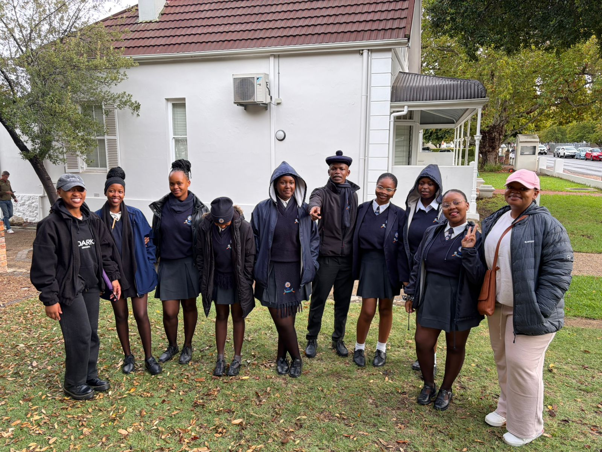
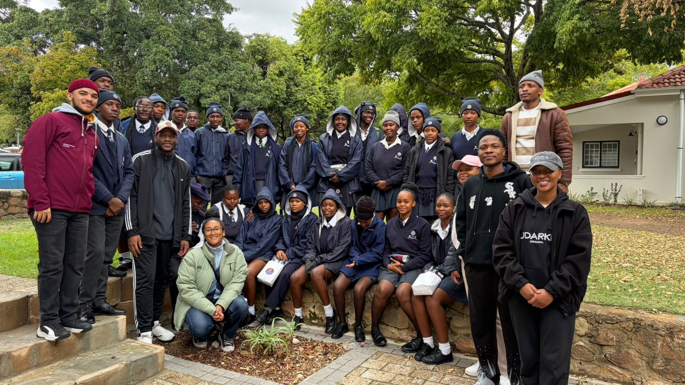
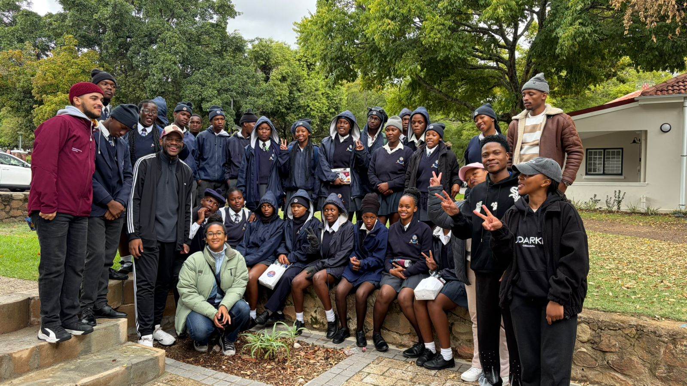
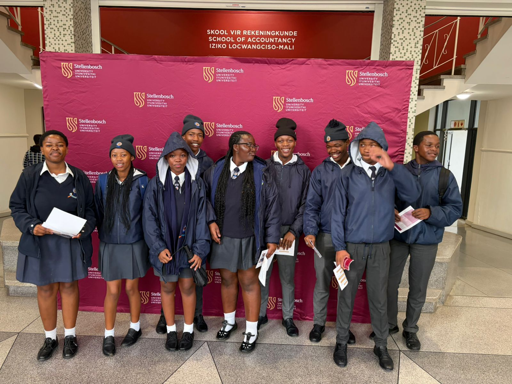
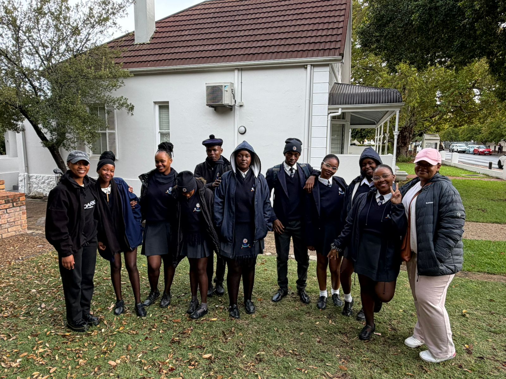
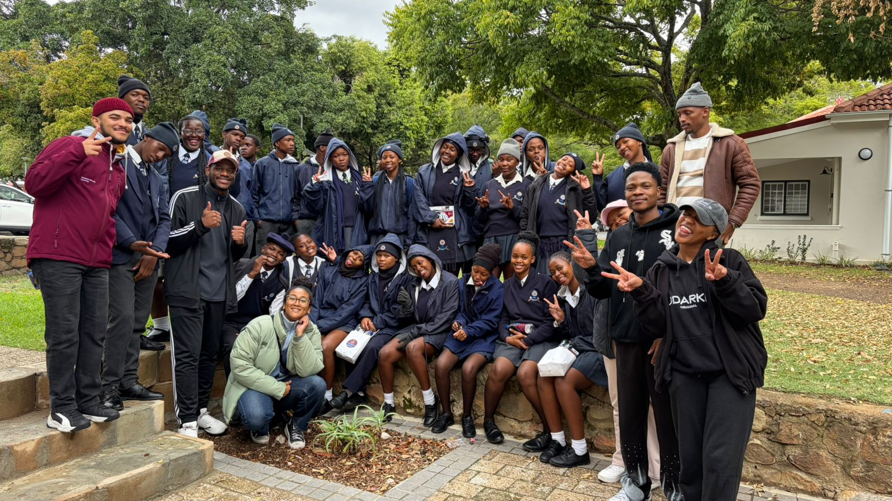
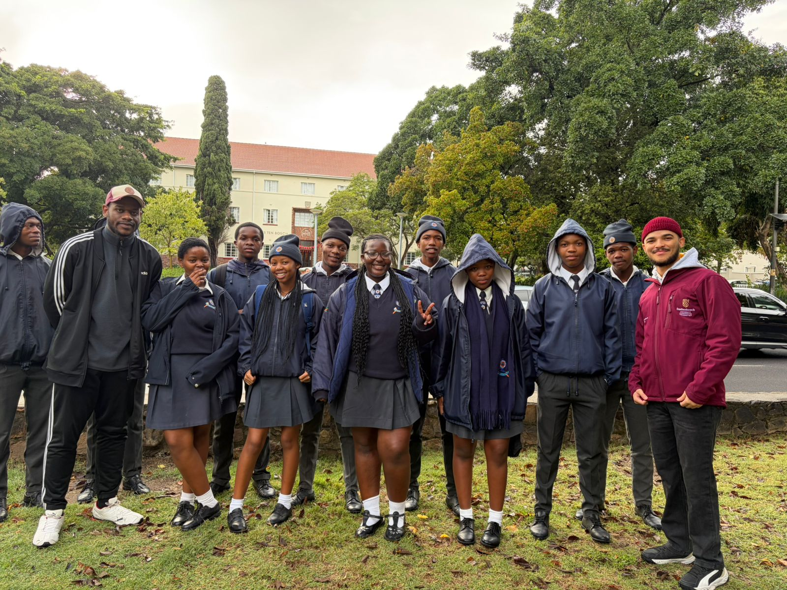
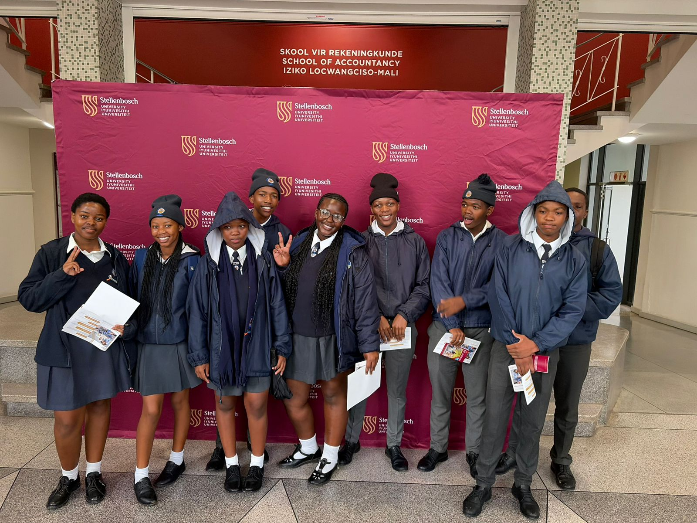

Completed
Stellenbosch University Open Day
We took top-performing Makupula learners on a guided visit to Stellenbosch University, exposing them to diverse faculties, campus life, and career paths. The experience made tertiary study feel tangible and within reach for every learner who attended.







